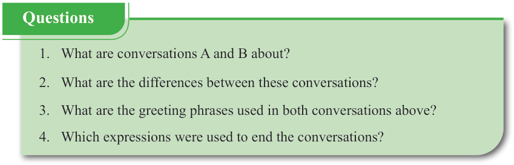

English for Secondary Schools Student’s Book Form One, printed page 114

Questions
- 1. What are conversations A and B about?
- 2. What are the differences between these conversations?
- 3. What are the greeting phrases used in both conversations above?
- 4. Which expressions were used to end the conversations?
1. What are conversations A and B about? 2. What are the differences between these conversations? 3. What are the greeting phrases used in both conversations above? 4. Which expressions were used to end the conversations?
 Do You Know? section heading.
Do You Know? section heading.DO YOU KNOW?
A phone conversation is a common way to communicate with various people. The conversation may be formal or informal, depending on who you are communicating with. It is important to understand the difference between formal and informal phone conversations for effective communication. The following table highlights some of the differences:
| S/no. | Formal phone conversation | Informal phone conversation |
|---|---|---|
| 1. | It is used for official purposes, including doing job interviews, contacting authorities, and reporting official issues. | It is used for casual, personal and friendly interactions, with family friends and colleagues. |
| 2. | It uses formal language, and it is a polite and respectful interaction. | It uses informal language and it is a relaxed and friendly interaction. |
| 3. | It begins with formal greetings and states the name, place and the purpose of the call. For example Good afternoon! My name is Sadala Nova from Kurunzi in Mpome ward. | It starts with casual greetings and conversation with a friendly question or statement such as Hi or Hey. |